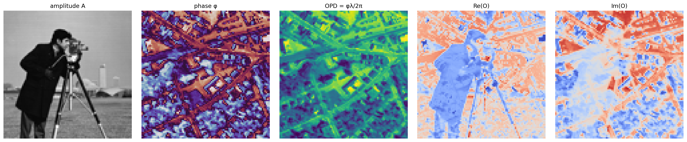

Published
FM-FPM
FM-FPM 검증 보고서
Frequency-coded event-camera Fourier ptychographic microscopy의 Milestone 1-6 검증과 관련 연구 조사 요약.
보고서 열기Lukael Research
실험과 보고서를 모아둔 리서치 아카이브입니다.
Archive

Frequency-coded event-camera Fourier ptychographic microscopy의 Milestone 1-6 검증과 관련 연구 조사 요약.
보고서 열기